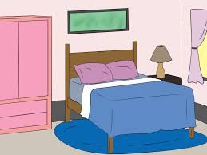
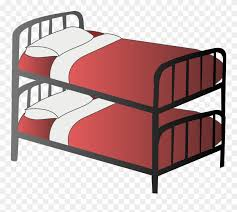
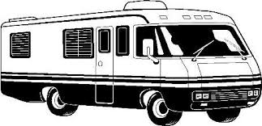

Sleeping Arragiments
Bed Rooms

There is a bedroom with a single Queen bed.

There is a bedroom with a twin bunk bed as well as a Queen bed.
We also have cots and a couch to sleep on if the beds are full.
Lower RV hookup

We have a lower RV hookup for power and water. We are not sure how hard it is to get a RV up the hill but it is possible.